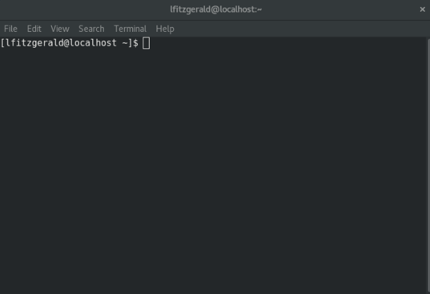
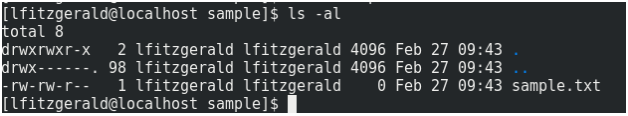
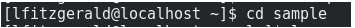
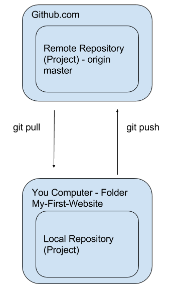

An introduction to using the terminal, Git and Github.
The terminal is an interface in which you can type and execute text-based commands.

Another way of describing an interface is how something is interacted with. Some examples are: - A steering wheel in a car - A controller of a game console - A keyboard on a computer - A graphical user interface (GUI)
Can you think of other examples?
This depends on the operating system you are using: - On Mac - Use spotlight search to search for "terminal" - On Linux - Use the search program to search for "terminal" - On Windows - Use the search to search for "cmd"
You will see <username>@<computer><foldername>. This tells you what folder you are in.
To see the contents of the folder you are currently in type ls -al and hit enter. (see the image below for an example).

This will show you a list of all files and folders inside the folder you are currently in.
To move to a different folder inside the folder you are currently in type cd <folder-name> (See the image below for an example).

Using these you commands you should be able to get to the folder where your My-First-Website files are stored. This is where we want to initialize (create) our local git repository (project).
NOTE: If you go into a folder that you want to get out of type cd .. and hit enter. This brings you back up one folder.
In the terminal . indicates the current folder and .. indicates the outer folder.
NOTE: You can use tab to complete folder names. E.g type cd sam If you hit tab at this point and there is a folder that matches like the sample folder, the terminal will complete it for you.
Git is a program used to manage source code. Source code are the files and folders that make up your website (i.e. everything inside your My-First-Website folder)
The image below shows how the local repository (your folder with your website code) and the remote repository (your project on github) relate to each other.

In order to set up the remote repository (project) on github we created an account on Github.
In order for the website to be hosted we created a New Repository (Project) and named it using the following syntax <username>.github.io
This step is essential for the hosting to work. Once the repository is created on github we can go back to the terminal to get our files into that repository.
When you create the repository it will give you the option to add a README to the repo. Chose yes at this option.
git clone <ssh address>git add README.mdgit commit -m 'first commit'git remote add origin https://github.com/<username>/<reponame>.git<username> put your actual github username instead. And instead of <reponame> put the name of your repository instead.git push -u origin masterNow that we have set up our folder to be able to push the local files to the remote github project it is now much simpler to push the rest of the files. Follow the below steps to get your other files up there.
NOTE: Make sure that you are in your My-First-Website folder and NOT any other folder on your computer when you do these commands
ls and press enter to see what files are in your foldergit add <filename> for each of the files that you want to add i.e. for your index.html file type git add index.htmlgit statusgit commit -m 'adding more files'.-m indicates the message we want to include with the commit.git status. There should be no more files in green. This means that they are now in the commit.git push<github-username>.github.io/index.html